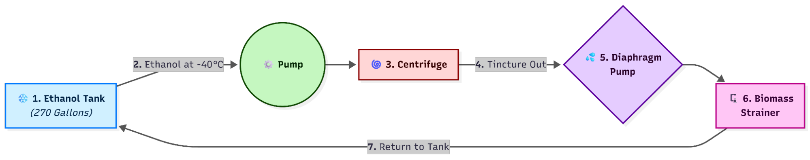

❄️ Perma Cool Ethanol Pre-Chiller
Step-by-Step Process & The Electric Advantage
⚙️ Step-by-Step Process for Using the Perma Cool Ethanol Pre-Chiller
1. Chill Ethanol
Ethanol is chilled to -40°C/F.
2. Pump Ethanol
The chilled ethanol is pumped by the Perma Cool pump to fill the centrifuge.
3. Process Biomass
The centrifuge processes the biomass using the chilled ethanol.
4. Extract Tincture Solution
The ethanol, now called the "tincture solution," is spun out of the centrifuge.
5. Pump Tincture Solution
A diaphragm pump moves the tincture solution out of the centrifuge.
6. Filter Biomass
The tincture solution passes through a biomass strainer to filter out any biomass particles. Filtering the tincture solution helps protect the Perma Cool chiller from biomass contamination.
7. Return and Rechill
The tincture solution, now typically around -30°F (10 degrees warmer due to the extraction, pumping, and filtering stages), returns to the Perma Cool chiller.
8. Repeat
The tincture solution is re-chilled to -40°C/F to continue extraction. Repeat these steps until you reach at least a 2 lbs of material to 1 gallon of ethanol ratio, processing up to 440 lbs of biomass in your 270 gallon ethanol chilling tank.
Pro Tip: By following these steps, you ensure efficient and consistent extraction using the Perma Cool Ethanol Pre-Chiller.
⚡ Advantages of Using Electricity with the Perma Cool Ethanol Pre-Chiller
Switching from liquid nitrogen (LN2) to electricity with the Perma Cool Ethanol Pre-Chiller delivers major benefits in cost, efficiency, safety, and reliability.
💵 Cost Savings
- Electricity is significantly more economical than LN2, eliminating ongoing consumable costs.
- The Perma Cool units often pay for themselves within the first one to two months through LN2 savings alone—before factoring in the cost of LN2 chillers themselves.
⏱️ Workflow Efficiency
- Extraction Efficiency: Each gallon of ethanol can be used to extract at least two pounds of material. Ethanol that has already gone through extraction can be reused, maximizing efficiency.
- Optimized Ethanol Usage: Re-washing material with previously extracted ethanol maintains the proper ethanol-to-material ratio for centrifuge operation, while also allowing larger ethanol batches to be chilled at once. This speeds up overall throughput.
- Consistent Temperature Control: The system quickly rechills ethanol back to -40°C/°F after extraction. Because the ethanol only needs to be cooled from a small temperature rise, chilling is faster, and overall productivity is higher.
🛠️ Reduced Labor and Hassle
- LN2 requires constant deliveries, tank handling, and storage management. A missed delivery or supply shortage can halt production.
- Electricity removes these issues, reducing labor hours and eliminating supply chain risks.
🛡️ Safety
- LN2 is one of the leading causes of laboratory accidents in the United States.
- By removing LN2 from the large-scale chilling process, the Perma Cool system minimizes safety risks for staff and reduces environmental hazards.
💧 Additional Advantage: Concentrated Tincture
- A higher-saturation ethanol tincture also improves downstream efficiency.
- With less ethanol per pound of material, evaporation requires less energy and time, further streamlining production.
📊 Summary
Using electricity with the Perma Cool Ethanol Pre-Chiller lowers costs, increases workflow efficiency, enhances safety, and simplifies operations. The result is faster processing, higher productivity, and a safer, more reliable extraction environment.